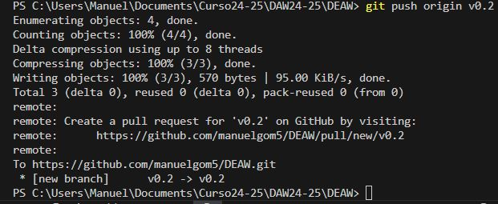
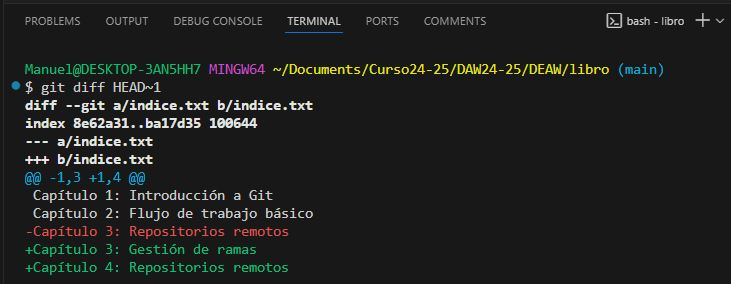
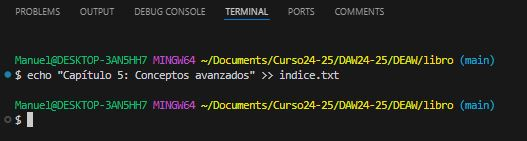

Práctica 5.1 - Ejercicios Git y GitHub
Autor: Manuel Gómez Ruiz
Asignatura: Despliegue de Aplicaciones Web
Fecha: 03/02/2025
Práctica 5.1: Ejercicios Git y GitHub
Repositorio DEAW
1. Crear un repositorio en vuestro GitHub llamado DEAW.
Dirigete a tu cuenta de GitHub, haz clic en el botón New Repository, luego añade un nombre para el repositorio, el propietario, una breve descripción de su contenido y elige si será público o privado.
2. Clonar vuestro repositorio en local.
Para clonar un repositorio utiliza el comando git clone junto al enlace del repositorio terminado en .git.
Manuel@DESKTOP-3AN5HH7 MINGW64 ~/Documents/Curso24-25/DAW24-25
$ git clone https://github.com/manuelgom5/DEAW.git
README
1. Crear (si no lo habéis creado ya) en vuestro repositorio local un documento README.md.
Nota
Escribir un pequeño texto en este README a propósito del repositorio y el módulo para el que se utilizará.
Puedes utilizar el comando echo -e para introducir el texto del archivo a la misma vez que lo crea -> echo -e "Capítulo 1: Introducción a Git\nCapítulo 2: Flujo de trabajo básico\n" > README.md.
Commit inicial
1. Realizar un commit inicial con el comentario Comenzamos con los ejercicios de git.
Como el archivo README.md aún no ha sido agregado al área de staging, debes utilizar git add para incluirlo en el seguimiento antes de realizar el commit. Si el archivo ya estuviera en seguimiento por Git, podría utilizar directamente git commit -am 'Mensaje'.
Push inicial
1. Subir los cambios al repositorio remoto.
Usa el comando git push para subir los cambios a la rama principal. Si es la primera vez que subes cambios a la rama, utiliza el flag -u para establecer una relación de seguimiento entre una rama local y su correspondiente rama remota, para que posteriormente no sea necesario utilizar en la rama comandos como git pull.

Ignorar archivos
1. Crear en el repositorio local un fichero llamado privado.txt.
2. Crear en el repositorio local una carpeta llamada privada.
3. Realizar los cambios oportunos para que tanto el archivo como la carpeta sean ignorados por git.
Para crear el archivo, usa touch privado.txt, y para la carpeta mkdir privada, luego crea un archivo llamado .gitignore que incluya la ruta de ambos para que se vean y se puedan usar solo en local.
Añadir fichero1.txt
1. Añadir fichero 1.txt al repositorio local.
Para agregar el archivo al repositorio, primero añade el archivo al área de seguimiento con git add, ya que acaba de ser creado, agregale un mensaje con git commit -m y le haces un git push para enviar los cambios al repositorio remoto.
Comprobación de que está subido en GitHub.
Crear el tag v0.1
1. Crear un tag v0.1.
Utiliza el comando git tag NombreTag.

Subir el tag v0.1
1. Subir los cambios al repositorio remoto.
Utiliza el comando git push origin nombreTag para agregarla a Github, aparecerá en el repositorio bajo el nombre de tags.

Cuenta de GitHub
1. Poner una foto en vuestro perfil de GitHub.
Dirigete a la sección de Settings y selecciona en editar tu foto.
2. Poner el doble factor de autentificación en vuestra cuenta de GitHub.
Ve a Settings > Password and Authentication, y configura un método adicional para proteger tu cuenta. Esto asegurará que, al acceder desde tu equipo o cualquier otro dispositivo, necesitarás un segundo factor de verificación, como el acceso a tu móvil, para confirmar tu identidad y realizar acciones sensibles en tu cuenta.
Uso social de GitHub
1. Preguntar los nombres de usuario de GitHub de 2 de tus compañeros de clase, búscalos y sigueles.
En Your Profile puedes ver a las personas que estás siguiendo y a quienes te siguen. Si haces clic sobre sus nombres, podrás ver más detalles de sus perfiles.

2. Seguir los repositorios DEAW del resto de tus compañeros.
Para seguir un repositorio, accede a él y haz clic en el botón Watch. En mi caso, he seleccionado recibir notificaciones cada vez que haya cambios, menciones o comentarios en el repositorio de mi compañero.
3. Añadir una estrella a los repositorios DEAW del resto de tus compañeros.
El botón para añadir estrellas se encuentra junto al botón de seguimiento del repositorio. Los repositorios a los que des una estrella se pueden visualizar en la sección Your profile.

Crear una tabla
1. Crear una tabla de este estilo en el fichero README.md con la información de varios de tus compañeros de clase:

En README puedes crear una tabla utilizando la sintaxis adecuada.
Como puedes ver, GitHub es capaz de interpretar el formato de la tabla en el archivo README y la muestra en formato tabla.

Colaboradores
1. Poner a github.com/arammes003 como colaborador del repositorio DEAW.
Para hacerlo, accede a los ajustes (Settings) de tu repositorio > Collaborators, y añade su nombre de usuario.
Notas
1. Este ejercicio es continuación del anterior por lo que tendreís que seguir trabajando en el repositorio DEAW.
2. También tendreís que ir poniendo los comandos que habéis tenido que utilizar durante todos los ejercicios y las explicaciones y capturas de pantalla que consideréis necesarias en el informe.
Crear una rama v0.2
1. Crear una rama v0.2.
2. Posiciona tu carpeta de trabajo en esta rama.
Puedes realizar ambas acciones a la vez utilizando el comando git checkout -b nombreRama.
Añadir fichero 2.txt
1. Añadir un fichero 2.txt en la rama v0.2.
También puedes crearlo con echo -e como te mostré previamente. Aunque estés en otra rama, el proceso de add y commit sigue siendo el mismo.

Crear rama remota v0.2
1. Subir los cambios al repositorio remoto.
Puedes subir la rama y su contenido haciendo uso del comando git push origin NombreRama.

Como puedes ver, ahora existe la rama en GitHub.

Merge directo
1. Posicionarse en la rama main.

2. Hacer un merge de la rama v0.2 en la rama main
De esta manera, los cambios realizados en tu rama v0.2 se integran en la rama principal (main).

Merge con conflicto
1. En la rama main poner Hola en el fichero 1.txt y hacer commit.

2. Posicionarse en la rama v0.2 y poner Adios en el fichero "1.txt" y hacer commit.
Sobreescribimos la misma línea con un nuevo contenido y guardamos el archivo.

3. Posicionarse de nuevo en la rama main y hacer un merge con la rama v0.2.
Como se puede visualizar esto llevará a un conflicto, ya que el archivo tiene contenido distinto en ambos commits.

Listado de ramas
1. Listar las ramas con merge y las ramas sin merge.
Para listar las ramas que ya han sido mergeadas, utiliza git branch --merged. Para listar las ramas que aún no han sido mergeadas, utiliza git branch --no-merged.

Arreglas conflictos
1. Arreglar el conflicto anterior y hacer un commit.
Resolvemos el conflicto eligiendo mantener ambas modificaciones en líneas separadas. Luego, realizamos un commit utilizando git commit -am para agregar el archivo sin conflictos y guardarlo.

Borrar rama
1. Crear un tag v0.2.
Utiliza el comando git tag NombreTag para crear el nuevo tag.

2. Borrar la rama v0.2.
Para eliminar una rama, debemos borrarla tanto localmente como de manera remota. Usa git branch -d NombreRama para eliminarla localmente y git push origin --delete NombreRama para borrarla del repositorio remoto.
Listado de cambios
1. Listar los distintos commits con sus ramas y sus tags.
El comando git log --oneline --decorate --graph --all muestra cada commit en una sola línea, con todas sus referencias (nombres ramas, tags, merges)

Referencias
Pro Git book, written by Scott Chacon and Ben Straub and published by Apress
Práctica 5.2: Ejercicios Git y GitHub
Nota
Cuando se habla de **zona de intercambio temporal** o zona **staging**, estamos hablando de un add
Si tenéis dudas para realizar estos ejercicios, podéis consultar la [siguiente web](https://aprendeconalf.es/docencia/git/manual/)
Enunciados: Ejercicios de creación y actualización de repositorios
Ejercicio 1
Configurar Git definiendo el nombre del usuario, el correo electrónico y activar el coloreado a la salida.
Para que Git asocie correctamente los commits a nuestra identidad, debemos configurar el nombre de usuario y el correo electrónico con los comandos git config --global user.name y user.email, y para mejorar la legibilidad de los mensajes, podríamos activar el coloreado con git config --global color.ui auto.
Mostrar la configuración final.
Con el comando git config --global --list podemos comprobar que los datos se han introducido correctamente.

Ejercicio 2
Crear un repositorio nuevo con el nombre libro y mostrar su contenido.
Usa mkdir NombreRepo para crearlo, luego accede a él con cd e inicializa el repositorio con git init.
Para mostrar su contenido utiliza el comando ls -la.
Ejercicio 3
Comprobar el estado del repositorio.
Uso del comando git status.
Crear un fichero indice.txt con el siguiente contenido:
Capítulo 1: Introducción a Git
Capítulo 2: Flujo de trabajo básico
Capítulo 3: Repositorios remotos
Crea la rama main y accede a ella con git branch -M main, después crea el fichero y su contenido con echo -e y muestra su contenido con cat.
Comprobar de nuevo el estado del repositorio.

Añadir el fichero a la zona de intercambio temporal.

Volver a comprobar una vez más el estado del repositorio.
Ejercicio 4
Realizar un commit de los últimos cambios con el mensaje "Añadido índice del libro", y ver el estado del repositorio.
Ejercicio 5
Cambiar el fichero indice.txt para que contenga lo siguiente:
Capítulo 1: Introducción a Git
Capítulo 2: Flujo de trabajo básico
Capítulo 3: Gestión de ramas
Capítulo 4: Repositorio de ramas
Comando echo -e para crear el fichero a la misma vez que agregas su contenido.
Mostrar los cambios con respecto a la última versión guardada en el repositorio.
Para ello utiliza el comando git diff HEAD, también se puede usar para ver los cambios en los archivos o otras ramas.

Hacer un commit de los cambios con el mensaje "Añadido capítulo 3 sobre gestión de ramas".
Ejercicio 6
Mostrar los cambios de la última versión del repositorio con respecto a la anterior.
Comando git diff HEAD~1.

Cambiar el mensaje del último commit por "Añadido capítulo 3 sobre gestión de ramas al índice".
Volver a mostrar los últimos cambios del repositorio.
Para ello existen varios comandos, en este caso he usado el comando git show HEAD.
Ejercicios de manejo del historial de cambios
Ejercicio 1
Mostrar el historial de cambios del repositorio.
Comando git log que incluye información sobre cada commit, como el identificador, autor, fecha y mensaje de commit.

Crear la carpeta capitulos y crear dentro de ella el fichero capitulo1.txt con el siguiente texto.
Git es un sistema de control de versiones ideado por Linus Torvalds.
Comandos mkdir para crear la carpeta, y echo para crear el fichero con su contenido.

Añadimos los cambios a la zona de intercambio temporal.
Hacer un commit de los cambios con el mensaje "Añadido capítulo 1." Volver a mostrar el historial de cambios del repositorio.


Ejercicio 2
Crear el fichero capitulo2.txt en la carpeta capitulos con el siguiente texto.
El flujo de trabajo básico con Git consiste en: 1- Hacer cambios en el repositorio. 2- Añadir los cambios a la zona de intercambio temporal. 3- Hacer un commit de los cambios.
Añadir los cambios a la zona de intercambio temporal.

Hacer un commit de los cambios con el mensaje "Añadido capítulo 2."
Mostrar las diferencias entre la última versión y dos versiones anteriores.
Ejercicio 3
Crear el fichero `capitulo3.txt en la carpeta capitulos con el siguiente texto.
Git permite la creación de ramas lo que permite tener distintas verisones del mismo proyecto y trabajar de manera simultanea en ellas.

Añadir los cambios a la zona de intercambio temporal.

Hacer un commit de los cambios con el mensaje "Añadido capítulo 3."
Mostrar las diferencias entre la primera y la última versión del repositorio.

Ejercicio 4
Añadir al final del fichero indice.txt la siguiente línea:
Esto se puede realizar con el comando echo y la doble redirección.
Capítulo 5: Conceptos avanzados

Añadir los cambios a la zona de intercambio temporal.

Hacer un commit de los cambios con el mensaje "Añadido capítulo 5 al indice.".

Mostrar quién ha hecho cambios sobre el fichero indice.txt.
Con el comando git annotate alias de git blame podrás ver quién modificó cada línea de un archivo y en qué commit.
Ejercicios de deshacer cambios
Ejercicio 1
Eliminar la última línea del fichero indice.txt y guardarlo.
Accedemos al archivo con nano NombreFichero y modificamos el fichero.
Comprobar el estado del repositorio.

Deshacer los cambios realizados en el fichero indice.txt para volver a la versión anterior del fichero.
Con el comando git restore puedes deshacer cambios en tu directorio de trabajo, volviendo a una versión anterior de los archivos, ya sea desde el último commit o desde un commit específico.

Volver a comprobar el estado del repositorio.
Después de restaurar el archivo a una versión anterior que ya había sido commiteada, no se detectan cambios pendientes.
Ejercicio 2
Eliminar la última línea del fichero indice.txt y guardarlo.

Añadir los cambios a la zona de intercambio temporal.

Comprobar de nuevo el estado del repositorio.
Quitar los cambios de la zona de intercambio temporal, pero mantenerlos en el directorio de trabajo.
Lo podemos lograr gracias al comando git reset, que se utiliza para deshacer cambios en el repositorio, en la área de staging, directorio de trabajo, o incluso en commits anteriores, en este caso solo introduce el nombre del archivo que has añadido al área de staging.
Comprobar de nuevo el estado del repositorio.
Deshacer los cambios realizados en el fichero indice.txt para volver a la versión anterior del fichero.
Volvemos a como estaba el archivo indice.txt en el commit, usando git restore.

Volver a comprobar el estado del repositorio.

Ejercicio 3
Eliminar la última línea del fichero indice.txt y guardarlo.

Eliminar el fichero capitulos/capitulo3.txt.
Comando rm para eliminar ficheros.

Añadir un fichero nuevo capitulos/capitulo4.txt vacío.
Con touch puedes crear ficheros sin su contenido.

Añadir los cambios a la zona de intercambio temporal.

Comprobar de nuevo el estado del repositorio.

Quitar los cambios de la zona de intercambio temporal, pero mantenerlos en el directorio de trabajo.
Posible error: mejor utiliza git restore --staged NombreFichero.

Comprobar de nuevo el estado del repositorio.

Deshacer los cambios realizados para volver a la versión del repositorio.
Comando git clean -f, se usa para eliminar archivos no rastreados en el directorio de trabajo.
Volver a comprobar el estado del repositorio.
Ejercicio 4
Eliminar la última línea del fichero indice.txt y guardarlo.
Eliminar el fichero capitulos/capitulo3.txt.
Usa rm para borrar el fichero.

Añadir los cambios a la zona de intercambio temporal y hacer un commit con el mensaje "Borrado accidental."

Comprobar el historial del repositorio.
Deshacer el último commit pero mantener los cambios anteriores en el directorio de trabajo y la zona de intercambio temporal.
Comando git reset --soft permite realizar estos cambios tanto en la rama principal como en otras subramas, manteniendo los cambios anteriores en el directorio de trabajo y zona de intercambio.

Comprobar el historial y el estado del repositorio.

Volver a hacer el commit con el mismo mensaje de antes.
Deshacer el último commit y los cambios anteriores del directorio de trabajo volviendo a la versión anterior del repositorio.
Comando git reset --hard deshace el último commit, eliminando todos los cambios en el directorio de trabajo que no hayan sido guardados.

Comprobar de nuevo el historial y el estado del repositorio.

Ejercicios de gestión de ramas
Ejercicio 1
Crear una nueva rama bibliografia y mostrar las ramas del repositorio.
Comando git branch NombreRama para crearla y git branch para mostrarlas.

Ejercicio 2
Crear el fichero capitulos/capitulo4.txt y añadir el texto siguiente:
En este capítulo veremos como usar GitHub para alojar repositorios en remoto.
Añadir los cambios a la zona de intercambio temporal.

Hacer un commit con el mensaje Añadido capítulo 4.
Mostrar la historia del repositorio incluyendo todas las ramas.
Con el comando git log --graph --all --oneline puedes ver el historial de todas las ramas de forma compacta, mostrando el registro de commits en un formato de una sola línea para cada commit.
Ejercicio 3
Cambiar a la rama bibliografia.
Comando git checkout NombreRama para cambiar de rama.

Crear el fichero bibliografia.txt y añadir la siguiente referencia:
Creamos el fichero con echo -e de nuevo.
Chacon, S. and Straub, B. Pro Git. Apress.

Añadir los cambios a la zona de intercambio temporal.

Hacer un commit con el mensaje Añadida primera referencia bibliográfica.
Mostrar la historia del repositorio incluyendo todas las ramas.
Ejercicio 4
Fusionar la rama bibliografia con la rama main.
Nos movemos a la rama main y utilizamos un git merge para fusionar las ramas.
Mostrar la historia del repositorio incluyendo todas las ramas.
Eliminar la rama bibliografia.
Comando `git branch -d borra de forma local la rama.
Mostrar de nuevo la historia del repositorio incluyendo todas las ramas.

Ejercicio 5
Crear la rama bibliografia.

Cambia a la rama bibliografia.
Cambiar el fichero bibliografia.txt para que contenga las siguientes referencias:
Scott Chacon and Ben Straub. Pro Git. Apress. Ryan Hodson.Ry's Git Tutorial. Smashwords (2014)

Añadir los cambios a la zona de intercambio temporal y hacer un commit con el mensaje Añadida nueva referencia bibliográfica.

Cambiar a la rama main.
Cambiar el fichero bibliografia.txt para que contenga las siguientes referencias:
Chacon, S. and Straub, B. Pro Git Apress. Loeliger, J. and McCullough, M. Version control with Git. O´Reilly.

Añadir los cambios a la zona de intercambio temporal y hacer un commit con el mensaje Añadida nueva referencia bibliográfica.

Fusionar la rama bibliografia con la rama main.

Resolver el conflicto dejando el fichero bibliografia.txt con las referencias:
Se resuelve el conflicto combinando ambas líneas y borrando la primera línea del segundo texto.
Chacon, S. and Straub, B. Pro Git. Apress Loeliger, J. and McCullough, M. Version control with Git. O´Reilly Hodson, R. Ry´s Git Tutorial. Smashwords (2014)
Añadir los cambios a la zona de intercambio temporal y hacer un commit con el mensaje Resuelto conflicto de bibliografía.

Mostrar la historia del repositorio incluyendo todas las ramas.
Ejercicios de repositorios remotos
Ejercicio 1
Crear un nuevo repositorio público en GitHub con el nombre libro-git.

Añadirlo al repositorio local del libro.
Con el comando git remote add origin url puedes añadir un repositorio remoto a tu repositorio local, permitiendo así sincronizar los cambios entre ambos.
Mostrar todos los repositorios remotos configurados.
Comando git remote -v.

Ejercicio 2
Añadir los cambios del repositorio local al repositorio remoto de GitHub.
Acceder a GitHub y comprobar que se han subido los cambios mostrando el historial de versiones.

Ejercicio 3
Colaborar en el repositorio remoto libro-git de otro usuario.
Voy a colaborar con el repositorio libro-git de arammes.
Clonar su repositorio libro-git.
Antes de hacerlo, asegurate de que tienes permisos de colaboración para poder realizar push. Luego, agrega el repositorio remtoo a tu proyecto Git local con el comando git remote add origin URL.
Añadir el fichero autores.txt que contenga el nombre de usuario y su correo electrónico.
Añadir los cambios a la zona de intercambio temporal.

Hacer un commit con el mensaje Añadido autor.
Subir los cambios al repositorio remoto.

Ejercicio 4
Hacer una bifurcación del repositorio remoto asalber/libro-git en GitHub.
Accede al repositorio y haz clic en el botón Fork. Esto creará una copia del repositorio en tu cuenta de GitHub, manteniendo todos sus datos.
Clonar el repositorio creado en la cuenta de GitHub del usuario.
Crear una nueva rama autoria y activarla.
Añadir el nombre de usuario y su correo al fichero autores.txt.
Añadir los cambios a la zona de intercambio temporal.
Hacer un commit con el mensaje Añadido nuevo autor.
Subir los cambios de la rama autoria al repositorio remoto en GitHub.
Hacer un Pull Request de los cambios en la rama autoria.
Accede al apartado Pull Request, los Pull Request se utilizan para proponer cambios en un repositorio y solicitar que sean revisados antes de ser fusionados (merge) en la rama principal o otra rama destino.
Compara la rama main con los cambios sucedidos en la rama autoría y haz clic en Create Pull Request.
Añade un título al Pull Request, opcionalmente también puedes añadirle una descripción y tags, una vez añadido espera a que se publique la solicitud de merge.